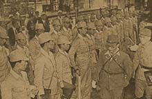

|
j
a v a s c r i p t |
July 26, 1943
News that Mussolini is out and Badoglio is in had us in such a state of excitement that we forgot to discuss other war news. The Astoria was a real scene, everyone talking indirectly and by the merest reference of course, but in complete understanding. The Japanese must have been mystified at the smiles of happiness painted on our faces. Thus ends an important chapter of the war. Italy will soon be out, the bells are already tolling the count for Adolf, and on the other side of the globe, the reverberations are reaching Japan. Margot rushed to Santo Tomas this morning to tell her husband the news. "Shh, keep quiet," was his stern admonition. "We all know about it already." "And it was dawn," says Margot, telling us the story, "and I was the first one in. So how did they know?"

Pensionados in Tokyo Station
The pensionados arrived in Tokyo on July 19. La Vanguardia shows two pictures of them in uniform, marching and standing to attention as trained — military style. Last Sunday's Tribune had a long article saying that while we don't have everything, "we have everything we need." It alluded to the propaganda of a first-class Swiss restaurant at the Escolta declaring, "You think of anything you want to eat and we will serve it to you." The article purports to interview a Swiss about the economic conditions in the Philippines, contrasting it with Switzerland in the First World War. This afternoon, Schaer explained: A couple of patrons of mine came in this noon, called me over, and asked for crab, lobster, whole-wheat toast with fresh butter and Parmesan cheese.... So I said, 'What's the matter, are you crazy?' She said, 'No, but the paper said....' Of course I said no such thing — I wasn't even interviewed. Darn it! I'm going to write a letter to the Swiss Consul just to have it on record that I said no such nonsense. At Las Piñas, near Parañaque, the Japanese decided they needed some horses, so they went out this morning and simply got them. They stopped carretelas and carromatas, inspected the horse, and if they liked it, simply handed the poor cochero a receipt. |
|
|
|
|